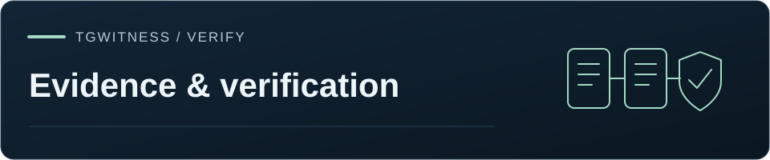

参考文献 / 証拠
Telegram · アカウントのエクスポート
アカウントが現在閲覧可能な内容をエクスポートします：スコープ、再開可能なジョブ、署名付きアーカイブ、および最小化された共有コピー。

アカウントエクスポートは対象アカウントを排他的に予約します。開始・再開前に監視や他の収集を明示的に一時停止してください。アプリが自動停止することはありません。
インストール管理者として、「ここから始める」→「自分のアカウントをエクスポート」を選択するか、「エクスポート」→「Telegramアカウント」→「アカウントのエクスポートを設定」を選択してください。 必要に応じてログインし、権限範囲を確認した上で、明示的にエクスポートを開始してください。継続的な監視は不要です。「保存された観察記録」は、既存の日誌を別途エクスポートしたものであり、そのZIPには、日誌フィルターに関係なくすべてのソースが含まれます。各ワークスペースには、独自のジョブ、署名用ID、およびストレージがあります。無制限の通常エクスポート権限を含む、発行済みのパネルアクセス権限では、これらのアカウント全体のルートを開くことはできません。
送信者およびテキストフィルターは、送信者またはメッセージ本文でフィルタリングの下に展開されます。アカウントデータと接続方法には、オプションのアカウントカテゴリと「Takeout」／「通常セッション」の選択項目が含まれており、閉じている場合でもその概要にはアクティブな選択項目が表示されます。これらのセクションを閉じても設定は保持されます。エクスポートおよびレポートの下書きは、ビューを切り替えても現在のパネルセッション内に残りますが、ブラウザを再読み込みしても保存されません。既存の仕事は、どちらのエクスポートオプションからでもアクセス可能です。
このワークフローは、接続されたアカウントから現在アクセス可能なデータをエクスポートします。デフォルトでは Telegram Takeout を使用します。これは、利用できないデータや削除された Telegram データのバックアップではありません。シークレットチャット、アクセスできない履歴、および以前の編集内容は復元されません。Telegram 側で、Takeout が開始されるまでの待機期間が設定される場合があります。パネルにはその待機時間が表示され、転送方式が黙って切り替わることはありません。「explicit regular-API」オプションでは、対象範囲が異なり、サポートされていないカテゴリも記録されます。
Takeoutは、Telegram Desktopでも使用されている公式のエクスポートAPIです。TgWitnessは、 独自の取得データから直接、Desktop互換のJSONを書き出すことができます。他者の アーカイブをインポートする必要はありません。チャットIDおよびメッセージIDは、どちらの転送方式でも利用可能です。 公開チャットであることや転送許可があっても、エクスポート速度が速くなることや、 Takeoutの承認遅延が解消されることは保証されません。速度を比較する際は、同じ範囲およびメディア設定で測定してください。
明示的に選択された最大20個のチャットIDについては、通常APIによるエクスポートでは、アカウントの完全なダイアログ一覧を検討する前に、それらのピアを
直接解決します。したがって、ダイアログ一覧に存在しない場合でも、
公開チャンネルは、参加することなくエクスポートすることができます。 キャッシュされていないピアについては、通常のインベントリが使用されます。
アーカイブフィルターは引き続き適用されます。Telegramがダイアログを返さず、
アーカイブされたチャットが除外されている場合、アーカイブ状態が不明なものは省略として記録されます。
Takeoutは、範囲分割によるインベントリ処理手順を維持します。どちらのパスもチャットに参加したり、
転送権限を変更したりすることはありません。
デスクトップ互換のJSONでは、Telegramがleftとマークしたチャンネルは、
left_chatsの下に表示されます。これには、アカウントが参加していない読み取り可能なパブリックチャンネルも含まれます。
FLOOD_WAITとFLOOD_PREMIUM_WAITの両方とも、サーバーが要求した全期間にわたってリクエストを一時停止します。
アカウントの期限は再接続や再起動後も維持され、後に行われるより短い待機時間によって
その期限を短縮することはできません。再試行回数には上限があり、キャンセルしてもシールされたページは保持され、
レート制限を回避するためにAPI認証情報がローテーションされることはありません。プレミアムの購入は行われません。
収集対象を選択する#
| 設定 | 意味 |
|---|---|
| 目的 | この買収が必要な理由を記録してください。不要な名前や機密性の高い案件の詳細はここに記載しないでください。 |
| レポート言語 | 読み取り可能なレポートのラベルの言語を選択してください。元のメッセージ本文は変更されません。翻訳されていないテンプレートのラベルには英語が使用されます。言語は、署名付きジョブのオプションで固定されます。 |
| チャットの種類 / チャットID | 選択したすべての種類、またはリストにあるチャットのみ。「保存済みメッセージ」はプライベートチャットに属します。アーカイブされたチャットは個別に選択可能です。 |
| 日付 | UTC。パネルの「開始日」と「終了日」の暦日はいずれも含まれます。APIでは、開始日と終了日を含む from_utc および除外 to_utcを採用しており、パネルは「Through」の翌日の開始時刻を送信します。境界が空の場合、その側は制限されません。 |
| 送信者ID | リストされた送信者からのメッセージのみ。リストが空の場合は、すべての送信者からのメッセージが含まれます。 |
| テキストには以下が含まれます | 大文字小文字を区別しないリテラルフレーズは、「OR」で一致します。送信者／日付／自身のメッセージに関する条件は、「AND」で組み合わされます。 |
| 自身のメッセージ | 送信したメッセージのみを保存します。 |
| メディアの種類 | 添付ファイルのカテゴリを選択するか、すべてをクリアしてメッセージファイルのダウンロードを回避してください。 |
| ファイル／メディアの合計制限 | ファイルごとのMiBおよびダウンロード済みメディアの合計GiB。テキスト、受信確認、読み取り可能なレポート、およびZIPのオーバーヘッドには、追加のディスク容量が必要です。 |
| アカウントのカテゴリ | プロフィール、連絡先、プロフィール写真、ストーリー、セッションのメタデータ、その他のTakeoutデータには、それぞれ個別の制御機能があります。 |
「Minimize」コレクションプリセットは、ファイルおよびアカウントのメタデータを無効にします。送信者/コンテンツフィルターは、メッセージページの保持およびメディアのダウンロードの前に適用されます。Telegramは、これらのフィルターを評価するために必要なメッセージを含むAPI履歴ページを引き続き送信します。つまり、フィルタリングを行っても、選択されていないメッセージがプロセスのメモリに入らないことが保証されるわけではありません。ワークスペース内で行われるその他の継続的な監視については、それぞれ独自の範囲および保持設定が適用されます。
プロフィール写真の履歴やストーリーは、デフォルトでは選択されません。ケースでメッセージのみが必要な場合は、プロフィールと連絡先も無効にしてください。添付ファイルやメタデータが不要な場合は、取得時にそれらを除外することで、このエクスポートに別のプライベートコピーが残るのを防ぐことができます。
写真のペイロードは、メタデータおよびハッシュマニフェストで識別される静止画像バリアントを使用します。これには、アニメーションアバターバリアントを含む写真も含まれます。そのアニメーションは、選択された静止画像に置き換えられることはありません。観測されたサイズより短い、または長いペイロードは添付ファイルの失敗として記録され、ファイル参照の更新中に表現が変更された場合は拒否されます。これらの失敗により、メッセージレコードは保持されたまま、アーカイブは不完全な状態となります。 独立した検証では、署名された長さが観測されたサイズや表現と矛盾する保存済み添付ファイルも拒否されます。これには、古いアーカイブ内のものも含まれます。
概要、対応範囲、検証#
各ジョブでは、オプションとアカウントの識別情報が固定されます。インベントリとキャプチャされたページには署名が付与され、ページレシートにはハッシュ値、カーソル位置、時刻、添付ファイルの結果、および直前のレシートが記録されます。コミットされたページのみが進行状況に反映されます。再起動／再開時には、処理を続行する前にこれらの記録がチェックされます。アカウントの変更、署名済みページの変更、またはレシートチェーンの不整合がある場合は拒否されます。取得処理の途中でオプションを編集することはできません。別の範囲を処理する場合は、別のジョブを開始してください。
「一時停止」は、実行中のアカウント操作を中断します。アプリケーションを再起動しても、未完了の作業は明示的に再開できるよう残されます。有効期限が切れた Takeout セッションは明示的な再開が必要であり、Telegram の分割範囲を変更すると、新たな取得が必要になる場合があります。「再開」では以前の観測結果が保持されるため、長時間実行されたエクスポートは単一の原子的なスナップショットとはなりません。取得中は、その他のアカウント変更操作や競合するエクスポートがブロックされます。ワークスペースを削除する前に、パッケージングが完了するまで待ってください。
「Resume」は、処理を続行する前に、すでにキャプチャされたコンテンツの検証を行います。低速なストレージ上の大容量アーカイブの場合、設定された「Parameters → Panel action timeout」（デフォルトは120秒）を超えることがあります。再試行する前に、この設定値を増やしてください。キャンセルやストレージの中断が発生するとジョブは一時停止状態となり、整合性チェックに失敗した場合は、説明付きの失敗ジョブが残ります。ファイルの閉じ処理を行うには、検証が完了するか、安全に停止する必要があります。大規模アカウントのスループットに関する主張は、合成チェックによって検証されていません。
パネルでは、選択された範囲の完全なアーカイブと部分的なアーカイブを区別し、欠落や読み取り失敗を記録します。意図的に除外されたファイルは、読み取りに失敗したファイルや利用できないファイルとは異なります。整合性検証が成功した場合でも、カバレッジを精査してください。Telegramが過去に存在したすべてのメッセージを返したことを証明できるローカルリーダーは存在しません。
完了したZIPは、繰り返しダウンロードやHTTP範囲ダウンロードのために引き続き利用可能です。アカウントアーカイブには manifest.json, manifest.sig、署名付き job.json, inventory.json, receipts/、権威ある data/*.jsonl、選択済み media/、読み取り可能なHTML、および検証ツールが含まれています。独立したチャネルを通じてコレクターのフィンガープリントを固定し、信頼できるインストール環境を使用して検証を行ってください：
python -m tgwitness.verify account-export.zip --fingerprint TRUSTED_SHA256展開後のコンテンツが4 GiBを超えるアーカイブについては、明示的に適切な --max-gib。パネルは、宣言された展開後のサイズと公開されたZIPダイジェストを使用して、認証済みで完全なローカルアーカイブを検証します。一方、外部CLIは独自のサイズ制限を維持します。読み取り可能なHTMLを開く前に検証を行ってください。アーカイブに同梱された検証ツールは便利ですが、独自に入手した検証ツールを使用することで、証拠と共に提供される実行可能コードを信頼する必要がなくなります。
Ed25519署名およびSHA-256ハッシュは、コレクターが関連するバイトをコミットした後の変更を検出します。これらは、Telegramがそれらのメッセージに署名したこと、コレクターの運営者が誠実であったこと、アカウントの履歴が完全であること、あるいは裁判所がその資料を証拠として認めることを証明するものではありません。キャプチャ時刻はコレクターの時計に基づいています。独立したタイムスタンプおよび独立した取得の来歴については、別途評価する必要があります。
弁護士やその他の受取人向けの開示資料を準備する#
完成したエクスポートファイルをダウンロードした後は、元のZIPを保持し、 index.html
開いてください。レポートには、その範囲、対象範囲、および
制限事項が説明されています。レコードの参照には、アーカイブ参照、ドキュメントパス、および
レコード番号が組み合わされているため、受信者はHTMLや印刷物上で同じエントリを特定できます。
具体的な使用例については、架空のレポートを開くをご覧ください。
アカウントのエクスポートが完了したら、「共有用コピーを作成」を選択します。これにより、別の署名付き派生ファイルが生成されます。元のZIPは変更されず、非公開のままです。受信者が完全な内容を受け取る権限を持っていない限り、縮小された派生ファイルと一緒に送信しないでください。レポートの言語は別途選択してください。言語や選択設定を変更した場合は、作成前に再度プレビューを行う必要があります。
- 開示目的を入力し、日付、送信者ID、およびリテラルテキストの条件を選択します。
- 身元情報を保持するか、リストされた参加者のみを公開するか、全員を仮名化するかを選択できます。いずれの仮名化モードでも、チャットID/タイトルおよびメッセージIDも置き換えられます。仮名は、1つの開示範囲内では固定されますが、個別に作成された開示範囲間では変更されます。
- メッセージ本文を保持するか、完全に省略するか、またはマスク対象として具体的な名前やフレーズを追加できます。プライベートモードでは、このツールは既知の非表示送信者名や別名、トークン単位の送信者ID、ダイレクトチャット名、リンク、メールアドレス、電話番号のような文字列もマスクします。既知の名前との照合では、Unicodeの大文字小文字の変換（case folding）が処理され、
Straße/STRASSE。一般的なグループ／チャンネルのタイトルは、メッセージ本文から自動的に削除されません。既知の身元マスクの制限を超えた場合は、ソースのエクスポート範囲を狭めるか、テキストを省略してください。このツールは、以降の名前を黙ってスキップすることはありません。これらは最善を尽くしたルールであり、一般的な匿名化ではありません。 - 受信者が必要としない限り、ファイルは除外してください。含まれるオリジナルファイルは、画像、音声、テキスト、メタデータをそのまま保持します。これらはツールによってnotのように匿名化されます。
- カウント数、警告、および変換後のメッセージのサンプルをプレビューし、作成を明示的に確認してください。サンプルは、12 メッセージまで、各メッセージは 2,000 文字までです。これはサンプルであり、結果の完全なレビューではありません。設定を変更するには、再度プレビューを行う必要があります。プレビューは 15 分後に失効し、その管理者セッションおよび元の ZIP に紐付けられています。作成後は再利用できません。新しいプレビューを作成すると、同じジョブおよびセッションにおける以前のプレビューは無効になります。
- 生成された完全な結果を
index.htmlをmessages.jsonlをローカルで確認してください。不要な情報が含まれている場合は、除外条件を厳格化した新しい開示情報を作成してください。署名済みのZIPをその場で編集しないでください。
選択により除外されたメッセージ#
プレビュー。開示情報が不完全な場合、そのように表示されます。少なくとも1つの開示済みメッセージを含むすべてのチャット内では、選択範囲から除外されたメッセージがマーカーとして表示されます。 [withheld by selection — rule: sender] （または text, period）。「選択範囲から除外されたメッセージ」を選択してください：連続する非開示メッセージの各ブロックごとに1つのマーカー（デフォルト）、またはメッセージごとに1つのマーカー。マーカーにはルールとカウントのみが含まれ、テキスト、送信者、日付、ファイルは一切含まれません。開示されたメッセージがないチャットは完全に除外されるため、このパッケージはその存在を明らかにしません。
「開示された返信」とは、その返信が何に対して行われたかを示すものです。具体的には、このコピーに含まれるメッセージ、選択によって非開示とされたメッセージ、あるいはソースエクスポートに含まれていないメッセージ（エクスポート前に削除されたか、そもそもエクスポートされなかったかのいずれか。エクスポートデータからは区別できません）です。 開示された返信が回答対象とする除外されたメッセージには、常に独自のマーカーが付与されるため、その返信は、なぜ空であるかを説明するレコードを指し示します。これら3つの状態は、ソースエクスポートに属する削除や収集の欠落とは区別されます。
書式は messages.jsonl （フォーマット tgwitness-account-disclosure-v2）では、各メッセージには state: disclosed、または withheld で rules および count。公開された返信には reply_to 対象を伴う id と。開示された返信には state (disclosed, withheld, not_in_source）。マニフェストには、公開されたメッセージ、チャット、メディア、および withheld メッセージをカウントします。 verify.py コンテンツを含むマーカーや、パッケージ内に存在しないレコードを指す返信は拒否されます。バージョン1のパッケージは従来通り検証されます。
この最小化された形式では、構造化されたアカウントプロフィール、連絡先、アバター、セッション、ストーリー、Telegramの生データオブジェクト、転送ヘッダー、返信の引用、連絡先カード、位置情報メタデータは省略されます。また、元のJSONLファイル、非公開フィルター設定、仮名化キー、およびIDマップも除外されます。選択されたテキスト、明示的に保持されたID、および含まれるファイルには、これらのフィルターで使用されたものと同じ名前、ID、またはフレーズが含まれている可能性があります。これらについては別途確認が必要です。 プライバシーポリシーと仮名化キーは、そのジョブ用のローカル保管庫に暗号化された状態で保持されます。ジョブを削除すると、関連する非公開開示記録も消去されます。公開ポリシー記録には、フィルタ値ではなくフィルタの件数が記録されます。明示された目的はマニフェストおよびHTML上で公開されます。明示的な非公開基準、および仮名化モードにおける既知の隠された身元情報も、メッセージ本文が省略されている場合を含め、そこでマスクされます。目的の記述には不必要な個人情報を含めないようにしてください。身元を特定できない文脈については記載したままにしておいても構いません。
そのマニフェストには、派生ファイル、公開ポリシー、および元のZIPのハッシュが紐付けられています。検証を行うことで完全性を確認でき、ソースがローカルで提供されている場合は、ソースとのリンクの一致も確認できます：
python -m tgwitness.verify minimized-disclosure.zip --fingerprint TRUSTED_SHA256
python -m tgwitness.verify minimized-disclosure.zip --fingerprint TRUSTED_SHA256 --evidence account-export.zipソースのリンクだけでは、変換処理によって必要な項目がすべて選択されたこと、あるいは個人を特定できる詳細がすべて削除されたことを単独で証明するものではありません。元の平文は証明として埋め込まれていません。その判断には、改めて検証を行う必要があります。
共有とホスト型キャプチャ#
受信者が必要とするメッセージとファイルを選択し、共有するコピー全体を確認した上で、ソースは別途保管してください。受信者がその正確なコピーを特定・検証できるよう、送信した ZIP ファイルのハッシュ値を記録してください。選択された識別子は仮名化されますが、含まれるテキストおよび元のファイルは引き続き確認対象となります。
GitHub Actionsは、Takeoutまたは通常のAPIを介したアカウント全体および選択したチャットのエクスポートに加え、1つのチャットに関するイベントログのエクスポートをサポートしています。ホスト型キャプチャガイドでは、設定の確認方法と120分という制限について説明しています。ホスト型キャプチャから生成された共有コピーを検証するには、そのソースハッシュを元のアーカイブと照合し、モード固有のチェックを用いてそのアーカイブの認証情報を確認してください。